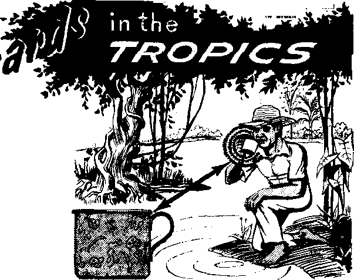
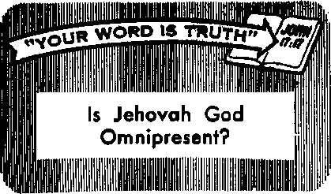

When Does Image Worship Become Idolatry?
PAGE 5
Bible Reading and Prayer—But Not in School
PAGE 12
U.S. President Appeals to Nation in Racial Crisis
PAG EE I
Should You Patent That Invention?
AUGUST 22. 1963
THE MISSION OF THIS JOURNAL
Newssources that are able ta keep you awake to the vital issuer of 6iil times must be unfettered by censorship and selfish interests. "Awake!” has no fetters. It recognizes facts, faces facts, is free to publish facts. It is not bound by political ambitions ar obligations; it is unhampered by advertisers whose toes must not be trodden on; it is unprejudiced by traditional creeds. This journal keeps itself free that it may speak freely to you. But it does not abuse its freedom. It maintains integrity to truth.
"Awake!” uses the regular news channels, but is not dependent on them, its awn correspondents are an all continents, in scores of notions. From the four corners of the earth their uncensored, on-the-scenes reports come to you through these columns. This journal's viewpoint is not narrow, but is international. It is read in many nations, in many languages, by persons af all ages. Through its pages many, fields of knowledge pass in review—government, commerce, religion, history, geography, science, social conditions, natural vyonders—why, its coverage is as broad as the earth and as high as the heavens.
“Awake!” pledges itself ta righteous principles, to exposing hidden foes and subtle dangers, to championing freedom far all, to comforting mourners and strengthening those disheartened by the failures of a delinquent world, reflecting sure hope for the establishment of a righteous New World.
Get acquainted with "Awoke!” Keep awake by reading "Awake!"
M !■ Ml w He
Published Simultaneously in the United States by the WATCHTOWER BIBLE AND TRACT SOCIETY OF NEW YORK, INC, 117 Adams Street Brooklyn 1, N. Y., U. S. A.
and in England by WATCH TOWER BIBLE AND TRACT SOCIETY
Watch Tower House, The Ridgeway London N.W. 7, England
N, H. Knorr, President Gbant Suiter, Setiretary
Printing this issue; 3,800,000 4d a copy (Australia, 5tf; South Africa, S’/aC)
“Awake!" Jt publlihrt In the following 25 FlMdtdBC UaaftttneeB far Bubscrtpthna should be Rent to the office
Sea I monthly—Afrikaans, Clnyanjs, D&iilBh, Dutch, En- in yuur country. Otherwise send your remittance to
giWi, French, German, Greek, Italian, Japanese, London, Notice Of aapltatlon Is sent at least two issuep
Norwegian, PorUJgiiese, Spanish, Swedish, Tagalog, Zulu, before sutatfiptlDTi expiree.
Monthly—<3ebu*ViM?iran, rhiiicie, Tlocano, Korean, Malayalam, Pntish, Tamil. Ukrainian. Yearly subscription Ofltew for semimonthly edl
America, U.S., 117 Adama St, Brooklyn 1, X Y. Australia, 11 Beresford Rd.. StratMteld, X.S.W, Canada, 150 Bridgeland Are., Toronto 10, Out. England, Watch Tower Uoitse, The Hidgeway, London N.W, 7 Hew Zealand. Nr-w North Rd., AuekUud, S,Wr 1 South Africa, Private Bag 2, P.O. Elioiisfnnt.eln, Tri. Monthly editl^iN cost half the above rates.
rales
tlone
$1
8/-$1
7/
7/’
fOe Entered as second-class matter at Brooklyn, N.Y. Primed In England
CHANGES OF ADDRESS should reach us thirty days before your moving date, Give us your old antf new address (If possible, your old address label). Write Watch Tower, Watch Tower House, The RldQmwa.y, Loudon N.W. 7, England.
The Bible translation used in ‘‘Awake I" Is the New World Translation of the Holy Scriptures, 1961 edition When other translations are nud the following symbols wilt appear behind the citations:
AS - American Slumlord Version AT - An American Translation AV - Authorized Version (1611'1 Da I N. DarLy’s version
-Qy - Catholic Douay version £D - The Emphatic DLaglutt JP — Jewish Publication Sne. Le - Isaac Letter's version
Mo —James Moffatt's Ferdon Ro - J. B. liotherbam’s version RS - Revised Standard Verdon
Yp — Robert YouhrS version
CONTENTS
Wrong with the Crowd or Right Alone? 3 When Does Image Worship
Altars to Gods Named “Unknown”
South America’s Stimulating
Bible Reading and Prayer
U.S. President Appeals to Nation
Should You Patent That Invention?
“Your Word Is Truth”
ON OCCASION evidence comes to light proving the majority to be wrong.
When this happens, what will you do? Will you choose to be wrong with the crowd, or will you stand alone for what you know to be right?
It is easier, and often profitable materially, to go along with the crowd in a passive way; whereas to deviate from the popular course of the majority may mean ridicule, ostracism and perhaps even physical abuse. This prospect terrifies many people into the mold of conformity. To soothe their consciences they may rationalize that since so many are doing what is wrong, it could not be so bad. They may even cite evidence and arguments, which in their hearts they know are not conclusive, in an effort to condone their actions.
Last summer the noted Mayo professor emeritus Walter C. Alvarez pointed to this failing of many doctors. Writing in an editorial in the journal Modem Medicine, August 6, 1962, he said: “Today we doctors tend to follow the leader. For instance: probably all of us with any education know that penicillin has no effect on the virus of colds; also that the widespread giving of penicillin is giving rise to serious trouble with penicillin-resistant staph, but because today practically every physician gives penicillin the minute he sees someone with the sniffles, every young doctor starting out in practice follows suit.”
Similarly, leading physicians have also pointed to the danger in the popular medical practice of giving blood transfusions. In fact, reports from the Department of Health, Education and Welfare, cited by
Dr. Max M. Simon in the New York Times of September 11, 1962, revealed that in the United States blood transfusions were responsible for the death of some 16,500 persons in 1961. “It is really hard to understand,” observed Dr. Alvarez, "why thousands of us doctors keep ordering transfusions—for patients who are not in shock and not in any great danger.” Evidently it is because they find it much easier to follow the medical practice of the majority than to stand alone for what is right!
In his editorial, Dr. Alvarez illustrated “how impossible it is for many a physician to 'say or write anything that would cause him to depart from the ‘party line*.” He told how the great European physiologist Dr. R. Magnus some years ago “reported that denervated smooth muscle does not contract rhythmically. This statement
promptly went into all of our textbooks on physiology, and I imagine it is still there.”
However, Dr. Alvarez explained that when he took the trouble to read in German all of Magnus’ long papers, he found that later, when Magnus “improved his technic, he obtained denervated muscle that contracted rhythmically.” Dr. Alvarez even found the place where Magnus “apologized for his earlier mistake.”
One would think that a person informed of the error would be anxious to make a correction. But not so. Dr. Alvarez said that when he “showed this statement to a professor of physiology who could read the original German, he refused to change the quotation in his textbook; he admitted that he would much prefer to be wrong with the crowd than right and alone.”
But this attitude is not limited to the medical field. It permeates every phase of life. Few persons have the backbone to stand up for what is right when it is not popular. A little pressure of public opinion, or from persons of influence, and people will often choose to be wrong with the crowd instead of taking the side of truth and righteousness.
The Saturday Evening Post of June 8 reports concerning the efforts of the district attorney of New Orleans, Louisiana, to enforce the laws against gambling, prostitution and other vices so prevalent in one section of the city. Since the many places of ill-repute there are a tourist attraction, and thus furnish a chief source of revenue to the city, tremendous pressure is being exerted to prevent the cleanup. The complaint of one cab driver is typical: “Somebody’s gotta stop that guy.”
However, a well-known New Orleans madam named Norma did not sound so alarmed. She explained: “I’ve seen D.A.’s become ex-D.A.’s, and police chiefs become ex-police chiefs, and mayors become exmayors. But I’ve never become an exmadam.”
It is this same pressure of the crowd that sweeps many youngsters into the whirlpool of juvenile delinquency. Just as with their elders, they find it much easier to go along with others in wrongdoing than to resist and stand up for what is right.
The situation is similar when it comes to matters involving religion. When the Jews accused Jesus, the Roman governor Pontius Pilate investigated the charges and reported: “I find no fault in him.” Pilate knew Jesus was innocent and “kept on seeking how to release him.” But when the crowd put the pressure on, Pilate succumbed and had Jesus put to death. He chose to be wrong with the crowd instead of right and alone.—John 19:1-16.
While it is true that the majority are not always wrong, when it comes to practicing the true religion, Jesus showed that in this old world they would be. “Broad and spacious is the road leading off into destruction, and many are the ones going in through it,” he said. Jesus also pointed to the fact that the majority of the people “took no note” when Noah preached to them, and, for that reason, “the flood came and swept them all away." He warned that it would be the same at this time, when God promises to bring a similar destruction.—Matt. 7:13, 14; 24: 37-39; 2 Pet. 2:5.
This raises the questions: What will you do when you are shown from the Scriptures that many popular creeds and teachings of Christendom are false? How will you react when you learn that the human soul is not immortal, that hell is not a place of fire, and that the Bible does not teach a trinity? Will you prefer to go along with the popular misconceptions, or will you stand alone for what you know to be right? Your decision involves your life.
WE LEAVE Paris behind and head out into the French provinces. Passing Versailles and its famed palace, we continue on southwest toward Chartres, a religious center since before the time of Christ. When this town is still a few miles away, the spires of its distant twelfth-century cathedral seem slowly to rise out of the fields of gently waving wheat. Thousands of tourists route their French trip this way to admire the cathedral’s amazingly well-preserved twelfth- and thirteenth-century stained-glass windows. Pictures on at least seven of these windows depict the struggle against idolatry. In these pictures Roman Catholic “saints” destroy idols and refuse to worship before them; idols fall due to the faith and the preaching of the “saints.”
Many Protestants, who often consider the images before which Catholics pray to be idols, may be surprised at seeing this. But any well-informed Catholic knows that his church views idols as despicable, and considers idolatry to be a grave sin. He views idols as pagan, satanic and representations of heathen gods; while he considers his images to be sacred aids to worship and representations of “saints”—of persons who, because of their holiness, were much nearer to God than he is, and who may even have been noted for their activity in destroying pagan idols.
However, the words “idol" and “image" have the same origin. “Idol" comes from the Greek word eidolon, which simply means “image.” A famous French Catholic theological encyclopedia says: “Idol in general means image, figure, representation.”1 A many-volumed French dictionary adds that “idolatry signifies nothing else, etymologically speaking, than the worship of images.”2 Thus the book of Bible texts “Make Sur&of AU Things” properly defines idolatry as the "veneration, excessive love, worship or adoration of any made image, idol, representation or symbol of anything."
God’s servants were warned against such veneration. In the Ten Commandments
God gave to Moses, He said regarding their worship, at Exodus 20:4, 5:* “You must not make for yourself a carved image or a form like anything that is in the heavens above or that is on the earth underneath or that is in the waters under the earth. You must not bow down to them nor be
* Catholic lists normally eliminate this commandment, considering It as a part of the first commandment: 11 Tou must not have any other Gods against my face." To keep ten, they divide the final commandment against covetousness, making the ninth commandment condemn desiring your fellowman's house, and the tenth condemn desiring his wife. However, the Catholic translation by Crampon disagrees. He says, in a footnote on Exodus 2fkYI. that rounder ifcg the wsTTiTirdniTneiit to be against adoring other gods, and the second to forbid adoring "God through Images" "seems more natural and better supported by the context.” induced to serve them, because I Jehovah your God am a God exacting exclusive devotion."
The fact that images should not be given special service or special honor is supported by Roman Catholic translations of the Bible. For example, the French translation by the Catholic priest Crampon says: “You must not bow down before them, and must not serve them.” And the French Catholic translation by Glaire says: “You must neither adore them nor honor them: for I am the one who is the Lord your strong God."
A footnote in English-language editions of the Catholic Douay version says that what is condemned are images that are “made to be adored and served,” “or are worshipped with divine honour.” Thus, even according to this Catholic definition, images can easily become idols—depending upon the honor the worshipers give them.
There is nothing wrong with images as such—with pictures, photographs, sculptures or statues. The danger comes when people ,bow or pray before them. When people worship before an image, the particular image can take on a special value in the worshiper’s mind. This is evident when crowds are seen praying before a certain image, and not before another image of the same “saint” in the same church. Persons who use images to honor “saints” claim such worship is bad only if it replaces the worship of God. However, if part of the worship goes to the image, or even to the “saint” it represents, then not all of it is going to God. He is not getting the exclusive devotion about which he spoke when he forbade bowing before images.
The ease with which worshiping images, or worshiping men, or even worshiping angels, can become idolatry is shown by Migne’s monumental French Catholic theological encylopedia (3 series totaling 168 volumes), which says that some authorities believe idolatry started with the worship of angels. “First they were given a little respect, based on the excellence of their nature and on the aid we get from them; then they were given a worship inferior to that which is due God; finally they were worshipped without relation to God.”8 If the worship of holy angels could lead to idolatry, then the worship of even holy humans, whom the Scriptures say are “lower than angels,” could lead to the same end.—Heb. 2:7.
Throughout the earth “primitive” peoples use images as an essential part of their religion. God’s true servants, however, do not do so. It is true that God’s people in Bible times had images, but they did not bow before them, except when they fell victim to despised idolatry. Cherubim were placed on the ark of the testimony, but the people did not worship before them. Lions and bulls were included in the decoration inside the temple at Jerusalem, yet the people did not bow before them. Carved bulls supported the huge basin in the temple courtyard, but they were not objects before which people worshiped. In fact, God’s chosen people considered this such a serious danger that they made very few images. Thus a footnote by Vignouroux in Glaire’s Catholic Bible translation says: “The command not to make statues was so well observed, except in the cases of idolatry, that strictly speaking, no real Jewish art exists.”4
The First Christians
Not only did faithful Hebrews realize the importance of not bowing before images, but so did early Christians. They viewed it as idolatry, since it meant bowing before a man-made thing, instead of only before God. The Biblical vocabulary (Vocabulaire BibZi^ue) published under the direction of Jean-Jacques Von Allmen, says, on page 127: “Paul gives an explanation of Idolatry that merits the greatest attention. (Rom. 1:18-25) It is not, as is often thought, a sort of first stage or infancy of religion, from which would come, by a development or evolution, the so-called superior, spiritualist and monotheistic forms; it is on the contrary the result of a fall, a perversion of the original and authentic knowledge of God.”
History clearly shows that the first Christians, with their authentic knowledge of God, did not pray before images. M’CIin-tock and Strong’s Cyclopedia says it was the very lack of images among early Christians that brought upon them the “charge of atheism.”’ Apparently the pagans could not imagine the Christians’ being able to worship a God they could not see. Is not the thinking of those who contend images should be used to keep the worshiper’s mind on the object of his prayers thus closer to the thinking of the pagans than to that of the earliest Christians?
The first Christians, like the Jews, considered worship before images to be a form of idolatry, which they shunned in all its forms. The noted “Church father” Tertul-lian, in a vigorous attack on idolatry, referred to “the many shapes in which idolatry in all its breadth must be foreshunned. For in many ways it overthroweth the servants of God, and that not only when unrecognized but also when disguised.”—De Idololatria> chap. II.
In a statement that would certainly include the worship of human creatures, even of faithful creatures whom the apostle called “holy ones” or “saints,” Tertul-lian said: “Human error therefore wor-shippeth all things, save the Creator Himself of all things. The images of these are idols: the consecration of those images idolatry.” He declared that we must “shun like a pestilence every breath of it even afar off, not only in those things of which we have before spoken, but in the whole range of human superstition, (whether in the service of its own gods, or of dead men, or of kings,) ... ”8
The type of Image worship now practiced in Christendom had not yet developed in Tertullian’s day, so is not specifically mentioned by him. Yet the Holy Scriptures show that special honor is not to be given to Individuals—not even to one of Jesus’ twelve apostles! When Cornelius fell at the apostle Peter’s feet and did obeisance to him, Peter said: “Rise; I myself am also a man.” (Acts 10:26) And images do come under Tertullian’s heading “of dead men” —the persons the images represent, and who often are of a lesser stature than was Peter.
That at least some people have gone too far in their use of images, making veritable idols out of them, is obvious. In the year 599 Bishop Serenus of Marseilles, France, was so disturbed by the way he saw images being worshiped that he ordered that they be destroyed from all the churches of his diocese. Pope Gregory the Great wrote him: “I praise this, that you were zealous, that nothing made with hands should be worshipped.”7 But he added that the images should not be destroyed, since they enable illiterate persons to read on church walls the things they could not read in books. However, the images continue to carry far more significance than merely illustrating Biblical or Catholic history. They are addressed by name, decked with flowers, bowed before, paraded in the streets and continue to receive, at least at times, as much honor as the pagans gave their idols. In the eighth century Greek Catholic priests went so far in their belief that the images had taken on a value of their own that they scraped their “miraculous” paintings and served the chips in the communion wine given the worshipers.8
The Roman Catholic Church’s position was stated by the Council of Trent, which said the images are not adored the way idols are, “as if the Divinity resided in them, or as if we would ask them a favor, or put our confidence in them, as the pagans do their idols.”0 But can it really be said that confidence is not placed in the image—if not in theory, at least in practice?
When a particular image is termed “miraculous,” then confidence is placed in the particular image, in violation of the Scriptural commands and the early Christian example. Further, it is common to hear people speak of the worship, not just of a certain “saint,” but of a certain image. Cards at the church of Saint Augustin in Rome say of an image there: “The celebration in honor of this religious image is held the seeded Sunday of October under the name of the Maternity of the Most Holy Mary.” Exactly what is honored? Mary? No, as the *cards say, it is “this religious image.”
It 1s evident in the cathedral at Chartres, already mentioned, that worshipers consider some images more important than others. A small book, Les Trois NotreDame de la Cath&irale de Chartres (The Three Our-Ladies of the Chartres Cathedral) by the Canon Yves Delaporte, sold in the shops around the cathedral, says: “Perhaps there is no other monument as rich in images of the Holy Virgin as the Chartres cathedral [this book lists 175 of them]. But these images, sculptured, painted or appearing on the stained glass windows, are not equally famous. ... Only three are the object of a real worship: Our Lady of the Crypt, Our Lady of the Pillar and Our Lady of the ‘Belle Verriere’.” This Catholic book proves conclusively that people consider the particular image before which they bow to be important, and that it is not just a reminder of the person to whom the worshiper prays, but that the image itself has an importance in their mind. It says, on page 45, that the image “Our Lady of the Pillar” “still existed in the eighteenth century but it had lost its fame as an object of worship; it was before the Virgin of Wastin des Feugerets [another image] that people came to pray.”
Chartres’ most famous image, however, was “Our Lady of the Crypt.” The most shocking fact is that this image was long believed originally to have been a Druid idol. Catholic Canon Estienne claimed, m 1682, that the pagan Druids had worshiped before it “more than three or four hundred years” before Christ. Others disagree with him, but the fact that prayers intended for the Supreme God could be said before what was thought to have been a pagan idol shows that little distinction was made between “images” on one hand, and idols on the other.
The Catholic Encyclopedia criticizes the excesses of image worship in the East in the eighth century. It says the image “seems to have been in some sort the channel through which the saint was approached,” and “seems to have had a kind of personality of its own, inasmuch as certain pictures were specially efficacious for certain graces.” We have seen that, in many cases at least, the same holds true today.
However, the Encyclopedia says: “If so much reverence was paid to ordinary images ‘made with hands,’ how much more was given to the miraculous ones ‘not made with hands.’ Of these there were many that had descended miraculously from heaven.”10 The Encyclopedia criticizes the excessive reverence paid to these images in those ancient days, but even in modern times particular images have gained importance in the people’s mind through local legends that attribute “miraculous” origins to them.
Such legends were not discouraged by local priests who saw pilgrimages to their church grow as people came to worship before the image. An example is found in the booklet still sold in the chapel of Notre-Dame-sur-Vire, near Saint-Ld, France, which tells of the miraculous discovery of an image seen there. The booklet says this small image was caught in a fourteenthcentury fishermen’s net, and that it provided such a resistance that it stopped their boat’s downstream progress. When finally they gut to the bank and threw the net on the shore, the shock broke the image in two. But, “oh wonder!” the booklet says, “there under their amazed eyes, the two parts came closer, rejoined and welded themselves together.”" The crack, without the thinnest trace of mortar, this church booklet says, can still be seen. This story certainly is not included in this booklet to discourage the giving of special attention to this particular image. The authorities who honor such pamphlets with their church’s imprimatur cannot be surprised when readers ask if religious leaders who made no protest against such legends have not soiled their churches with idolatry.
The same chapel has a second image for which a miraculous origin has been claimed. The booklet says a sheep, despite the sheepdog’s bite, returned regularly to a spot where there was so little grass that it got only a few sprigs a day to eat. Yet it was by far the “fattest” of the flock. The shepherd’s curiosity prompted him to dig an immense hole there, and at the bottom he found an image of Mary. It is not impossible, the booklet says, “that imagination somewhat embellished this marvelous story." But it adds: “The fact is there, certain and undeniable; the statue exists, object of the worship and of the veneration of several generations for twenty leagues [50 miles] around.”"
What does it say has been venerated? Mary? No, it says it is “the statue” itself!
This booklet, bearing its church’s imprimatur, further shows that such images receive special honor when it says young married couples “go down to the Chapel to place their union under the protection of Our Lady on the Vire.”11 Under whose protection? Mary’s? No, but under the image’s protection. Mary is not named “Our Lady on the Vire”—the image is!
Further, images often are not viewed as representations of holy persons to be worshiped, but are viewed (as pagan idols also are) as magic charms, used to gain special favors. This is shown by the church-approved history La Vie Religieuse au Temps de Saint Louis (Religious Life in Saint Louis’ Time), which says: “If they did not fulfill their mission,the saints sometimes suffered the public’s anger. Thus, at Rodez [in south-central France], the images of the saints were driven on horseback after the service and, when it stormed, beaten and covered with insults.”1-
Is this the way “images” are supposed to be used? It is not the way God’s chosen people of ancient times used them—they bowed before no images. It is not the way first-century Christians would have used them—they viewed special honor given to images as despised idolatry. Remember, the word “idol” comes from the Greek eidolon, the word for “image.” So any difference between an “image” and an “idol” depends only on the use to which the image is put.
Thus a prime question is: How is it used? An ornamental or educational painting or statue before which no one bows is not an idol. But when a person kisses the toe of the image of St. Peter that is in the Vatican (or a copy of that image), but does not do the same before other images purported to represent Peter, is he doing this because of Peter, or because of the particular image? When a man buys a Saint Christopher’s medal and puts it on his car, does he think: ‘Now I’ll think of Saint Christopher’ ? Or does he think: ‘Now I have the medal’? If having the medal makes even a slight difference, if in his mind having the medal with Christopher’s image on it has changed something, then the medal itself has value in his eyes. He is, in the words of the Council of Trent, among those who “would ask them a favor, or put our confidence in them, as the pagans do with their idols.”
And persons who use idols are, according to Jesus, in dangerous company. He put them among “those who practice spiritism and the fornicators and the murderers” and among the others who will be cast out, and have no part in his new world of righteousness. (Rev. 22<15) How much better it, is to stay clear of all trace of image worship, and, as Tertuliian said, to shun “every breath of it even afar off”! Thus one should pray, not before an image of a “saint,” but the way Jesus said to pray— directly to the Father, in the Son’s name. Jesus said to pray: “Our Father in the heavens . . .,” and: "Whatever it is that you ask in my name, I will do this.” No other persons have the right, or even the possibility, to be intercessors for you. The inspired Scriptures are clear on this when they definitely say: “For there is one God, and one mediator between God and men [not a ‘saint’ before whose image people bow, but], a man Christ Jesus.”—Matt. 6: 9; John 14:13, 1 Tim. 2:5.
SOURCES
i Encyclopedic Thdologigue, Mlgne, published at Fetlt-Montrouge, France, 1850, First Series, Vol. 34, col. 1253.
2 Grand Dictionnaire Universel du XIX’ Siicle, Vol. 9*. p. 574.
2 Encgalopedie Thdologique, First Series. Vol. 2, cols. 789, 790.
4 La Sainte Bible, Glaire and Vlgnouroux, Faris, 1924, footnote on Deuteronomy 4:16.
a M’CUntock & Strong’s Cycloptedia, Vol. 4. p. 303. s Tertuliian, De Idololatrius, chaps. II, IV, XIII.
Dodgson's translation, published in “A Library of Fathers of the Holy Catholic Church,” Oxford, 1842. ■
t Library of Fathers (volume on Tertuliian), p. 114. s Les Monuments Ditruits de I'Art Francois, by Louis R4au, Paris, 1959, p. 20.
a Dictionnaire des Religions, by E. Royston Pike, quotation from French adaptation by Serge Huttn. Paris, 1954, p. 158.
io The Catholic Encyclopedia, New York, 1910 Vol. 7. p. 668.
11 iYotre-Ltame-sur-Vire, by R. P. Lemaltre, Bayeux, France, 1945. pp. 8, 10, 12-15, 32.
is La Vie Religieuse an Temps de Saint Louis, by Germaine Maillet, Paris 1954, p, 155, ftn. 2.
Altars to Gods Named “Unknown”
When the apostle Paul was in ancient Athens, he saw an altar on which had been Inscribed “To an Unknown God,” (Acts 17:231 Not long after the time when Paul was in Athens, the city was visited by a wandering philosopher known as Apollonius of Tyana, who is reported to have said: “It is a much greater proof of wisdom and sobriety to speak well of all the gods, especially at Athens, where altars are set up in honor even of unknown gods.” When the geographer Pausanias visited Athens in the second century A.D., he reported in his Description of Greece that on the road from the Phaleron Bay harbor to the city he had observed “altars of the gods named Unknown, and of heroes.” He also speaks of “an altar of Unknown Gods” at Olympia. A similar altar was discovered m 1909 at Pergamum in the precincts of the temple of Demeter. And in Rome on the Palatine Hill is an altar, dating from about 100 B.C., with the inscription Sew deo sen deivae sacfrum], “Sacred to a god or goddess.”—Light from the Ancient Past, by Jack Finegan, pp. 276, 277; also The Bible Was Right, by Hugh Schonfleld, chap. 34.
Sy “Awak«l" correspondent in
Brazil
MATE
WHEN think-JJling of the ■Iworld’s most
popular stimulating beverages, many persons will list only tea, coffee and cocoa. But if one lives in South America, he will probably add to the list mate. Coffee, of course, is also used considerably in South America, but matt is basically a South American drink and is used extensively throughout this continent. Matt, in fact, is used almost everywhere in Brazil, where it is served as the popular drink called chimarrao.
From where is matt obtained? From the leaves and green shoots of certain species of holly, which are dried and ground. This plant is a shrub or small tree with smooth, shiny leaves about four inches in length. The fine stems are cut, then the green leaves are broken off and tied in bundles. These are transported to a place for parching and drying. After this the mate leaves are ground to a fine powder.
Just what is Brazil’s chimarrao? A Brazilian might make this stimulating beverage this way: First, he gets a' gourd, called a cuia, which grows on the calabash tree. When it is dry it becomes hollow. He cuts off the narrow end and makes a cup of it. Since the demand is very great, cuia growers have developed a good business, some of them painting beautiful scenes and decorations on the gourds.
Great care is now used in making the chimarrao. The mate maker fills the cuia two-thirds full of ground matt leaves, gives it a few quick shakes to form a crest and adds a little cold water. After the matt has absorbed the cold water, freshly boiling water is poured into it. The chimarrao is now ready.
Now comes the straw. A special metal straw is used for sucking up the matt. The end that
Is Inserted Into the cuia of hot matt is shaped like a shallow scoop with fine 7 slevellke holes that strain and filter the beverage as it is being drawn through the strawlike tube.
Traditionally the matt maker drinks from the gourd first. Then he fills it up again with boiling water and passes it to the next person to his right, when sitting in a circle of friends. This continues until all are served. Having all persons drink from the same straw is said to symbolize friendship, peace and unity. The latest hygiene teachings, however, advise that each person use his own straw, which he should take with him.
While chimarrao is quite common in the cities, it is still more familiar and a part of daily life in the interior among farmers and livestock raisers. The South American cowboy or gaucho spends much of his leisure time sipping chimarrao, and many families spend several hours a day drinking it.
Why is mate viewed as so refreshing and restorative in its effects? The main reason may be its content of theine or caffeine, which is also the source of the stimulating effect of coffee, tea and cocoa.
Some persons become so addicted to chimarrao that they arise every morning about five o'clock and drink for two hours untH they go to work. During that time they consume several kettlefuls of hot water. They are usually so accustomed to the drink that if they failed to have it, they would suffer from a bad headache all day. Others would rather miss a meal than miss chimarrao. After having early morning chimarrao, many do not eat until midday.
When Jehovah's witnesses preach from house to house, they are often invited to have a chimarrao. This affords an excellent opportunity to discuss the more invigorating good news of God’s kingdom to attentive listeners. Nevertheless, Jehovah’s witnesses do not have the time to ait for hours sipping mate, nor do they drink it to such an extent that they become addicted to it. Being well-balanced, they drink chimarrao without allowing it to interfere with Bible study and attending Christian meetings. Wherever they live, if true Christians use stimulating beverages, whether matt, coffee or tea, they do so in moderation, choosing the right time and place.
HERE is the place for religious exercises such as the recitation of prayers? Does it belong in public schools? That is the question
the
United States Supreme Court recently pondered and answered with an emphatic, Not in public schools!
In an 8 to 1 opinion handed down June 17, 1963, the American high court set
by asking that their children be excused from catechism classes.
In England the law provides for public schools to have religious exercises such as Bible reading and prayer, but there is provision for a pupil to be excused. As to the cases that came before the United States Supreme Court, there was also provision in the law for a child to be excused. Why, then, did the Court rule out
forth the reasons why religious exercises
do not belong in public schools. What will be the effect of this ruling? What about using* the Bible for teaching in schools? How should Christians view such a decision? Those who live in countries where religious exercises'Sre permitted in schools can also learn something from this historic legal case.
Countries, of course, differ considerably in regard to religious exercises in school. In some state-church countries the state runs the schools, and compulsory religious exercises are often required of some or all the students. Under the agreement Franco made with the Vatican, for instance, “the Church regained its place in the national budget. It insists on baptizing all children and has made the catechism obligatory in
Bible reading and prayer? The Court decided that the basic issue hinged on the First Amendment to the United States Constitution: “Congress shall make no law
respecting an establishment of religion or prohibiting the free exercise thereof.”
The majority opinion of the Court said: “In the light of the history of the First Amendment and of our cases interpreting and applying its requirements, we hold that the practices at issue and the laws requiring them are unconstitutional under the establishment clause.” Thus the Court held that prayer and Bible reading as they were practiced were religious exercises and so could not be sponsored by state law.
The attorney representing the State of Pennsylvania contended that the exercises were held only for moral value. But Chief
state schools."' Thus “in
Spain the spirit of Catholicism is so militant in the national schools that even the Communists prefer not to advertise their dissidence
Justice Earl Warren asked him: “If the state required 1 children to say the Lord’s Prayer, would you say that was constitutional?” His answer: “I would make a dis-
tinction between prayer as a formal religious act and Bible reading as a nonreligious act aimed at teaching morality.’”
The attorney for the city of Baltimore, Maryland, however, defended both Bible reading and prayer as not constituting a “religious act.” He said the purpose was to calm the pupils. In the Pennsylvania case the deputy attorney general for the state claimed Bible reading in school was not a “religious practice.” But he closed his argument with a counterclaim that “ripping out this practice would express hostility to religion.”3
The reaction to the Court decision prohibiting prayer and Bible reading as public school requirements was varied. Protestants in general hailed the ruling as keeping church and state separate. Some Protestant leaders protested. Evangelist Billy Graham lamented: “I can see God being driven from our lives. ... I don’t believe that a small minority should rule the majority of the people; 80 per cent of Americans want prayer.”4 The National Council of Churches, however, said the decision served as a reminder that “teaching for religious commitment is the responsibility of the home and the community of faith . . . rather than the public schools,”3 Jewish opinion in general was favorable. The loudest protests came from Roman Catholics. Three cardinals in the United States deplored the ruling, even though Catholic parochial schools are not affected by the decision. Cardinal Cushing of Boston even urged an amendment to the Constitution to allow devotional reading of the Bible in public schools.6
The decision actually involved two cases. In one, the Schempp case, a family in Pennsylvania opposed the state law requiring reading by one of the students of ten verses in the Bible. Then students were asked to stand and join in repeating the Lord’s Prayer. Participation in the exercises was voluntary, and students could be excused. But the Schempp family, of Unitarian faith, decided it would adversely affect the children, causing them to be viewed as “odd balls,” if they asked to be excused.
The second case involved the ruling of a Baltimore, Maryland, school board that required Bible reading “and/or the Lord’s Prayer" at the opening of the school. The case was brought by Mrs. Madalyn Murray and her son, both professed atheists. It was said that the son was subject to taunts and physical assault in school because of his having objected to the exercises.
In the Court’s 8 to 1 decision, the lone dissenter was Justice Potter Stewart, who based his dissent on the fact that there was no proof of coercion. He felt the issue was whether or not pressure was brought to bear on the pupils to participate. In both cases there was provision for the students to be excused, but they did not avail themselves of the provision. The dissenting justice, however, did see in the state law “the dangers of coercion.” Despite the provision for excusal, he said such dangers are greater in the schoolroom than in adult situations.
Besides the Court’s majority opinion, written by Justice Tom C. Clark, there were three concurring opinions, all joining Justice Clark’s views but adding more observations. The Clark opinion discussed the religious background of the United States, how the “Founding Fathers believed devotedly that there was a God,” how “only last year an official survey of the country indicated that 64 per cent of our people have church membership” and how “today authorities list 83 separate religious bodies, each with memberships exceeding 50,-000, existing among our people, as well as Innumerable smaller groups.”1 What is to be the role of government in a country with such deeply ingrained religious beliefs? The Court said it must be absolutely neutral, and quoted Judge Alphonzo Taft: “The Government is neutral, and while protecting all, it prefers none, and it disparages none.”
Does this position of neutrality toward religion apply just to the Federal government or also to the state government? Justice Clark said that the establishment clause of the First Amendment “has been made wholly applicable to the states by the 14th Amendment,” adding that this was done “twenty-three years ago, in Cantwell v. Connecticut "t It was in the Cantwell case, he said, that the interrelationship of the establishment clause and the free exercise clause was “first touched upon by Mr. Justice Roberts,” who said the clauses’ inhibition of laws had a “double aspect.” That is, “on the one hand, it forestalls compulsion by law of the acceptance of any creed or the practice of any form of worship. . . . On the other hand, it safeguards the free exercise of the cho-. sen form of religion.”
How did the Court view the fact that students could be excused from the religious exercises? Justice Clark wrote: “Nor are these required exercises mitigated by the fact that individual students may absent themselves upon parental request, for that fact furnishes no defense to a claim of unconstitutionality under the establishment clause. . . . Further it is no defense to urge that the religious practices here
-"The full text of all the opinions In the Sckempp and Murray cases appears In The United States Law Wee); of June 18, 1963. The full text of the Clark opinion and Stewart’s dissent appears In the New York Times of June 18, 1963.
f The Cantwetl case Involved one of Jehovah’1 witnesses who. while presenting Bible truths that expose false religious beliefs, was arrested and charged under a state law with disturbing the peace and not having a permit to obtain contributions for Bible literature. The Supreme Court upheld the right of Jehovah’1 witnesses to preach without interference. may be relatively minor encroachments <hi the First Amendment, The breach of neutrality that is today a trickling stream may all too soon become a raging torrent and, in the words of Madison, ‘it is proper to take alarm at the first experiment on our liberties.’ ”
The Court’s decision prohibited religious exercises in public schools but allowed for an objective study of religions and of the Bible.
What of the argument that the majority prefer having the religious exercises in school? The Court stated: “While the free exercise clause clearly prohibits the use of state action to deny the right of free exercise to anyone, it has never meant that a majority could use the machinery of the state to practice its beliefs. Such a contention was effectively answered by Mr. Justice Jackson for the Court in West Virginia Board of Education v. Barnette."1 Justice Jackson had said: “The very purpose of a Bill of Rights was to withdraw certain subjects from the vicissitudes of political controversy, to place them beyond the reach of majorities and officials. . . , One’s right to . . . freedom of worship ,.. may not be submitted to vote.”
Hie Clark opinion concluded: “The place of religion in our society is an exalted one, achieved through a long tradition of reliance on the home, the church and the inviolable citadel of the individual heart and mind. We have come to recognize through bitter experience that it is not within the power of government to invade that citadel.___In the relationship between man and religion, the state is firmly committed to a position of neutrality."
A most interesting aspect of the decision is this fact: Though Roman Catholics were the most vocal in opposing it, yet it was Justice Brennan, the only Roman Catholic on the Supreme Court, who wrote the longest opinion opposing the religious exercises. His opinion, seventy-seven pages long, viewed the exercises as violating both clauses of the First Amendment Said Justice Brennan: “While it is my view that not every involvement of religion in public life is unconstitutional, I consider the exercises at bar a form of involvement which clearly violates the Establishment Clause.”
Even with the excusal provision this Roman Catholic justice believed the exercises violated the free exercise of religion clause. He wrote:
“The excusal procedure itself necessarily operates jn such a way as to infringe the rights of free exercise of those children who wish to be excused. We have held in Barnette and Torcaso, respectively, that a State may require neither public school students nor candidates for an office of public trust to profess beliefs offensive to religious principles. By the same token the State could not constitutionally require a student to profess publicly his disbelief as the prerequisite to the exercise of his constitutional right of abstention, . . .
"Thus the excusal provision in its operation subjects them to a cruel dilemma. In consequence, even devout children may well avoid claiming their rights and simply continue to participate in exercises distasteful to them because of an understanding reluctance to be stigmatized as atheists or nonconformists simply on the basis of their request. Such reluctance to seek exemption seems all the more likely in view of the fact that children are disinclined at this age to step out of line or to flout ‘peer-group norms'. . . . The excusal procedure seems to me to operate in such a way as to discourage
the free exercise of religion on the part of those who might wish to utilize it, thereby rendering it unconstitutional in an additional and quite distinct respect.”
Justice Brennan touched on this when he quoted an Ohio governor who vetoed a compulsory Bible-reading bill in 1925, saying: “It is my belief that religious teaching in our homes, Sunday schools, churches, by the good mothers, fathers and ministers of Ohio is far preferable to compulsory teaching of religion by the state. The spirit of our federal and state constitutions from the beginning . . . [has] been to leave religious instruction to the discretion of parents.”
And how does the decision stand in the light of the Holy Bible? For true Christians it merely underscores what the Bible clearly teaches—that it is the parents' responsibility to teach their children true worship. This is made clear not only in the Hebrew Scriptures but in the Christian Greek Scriptures, where fathers are told: “Go on bringing them up in the discipline and authoritative, advice of Jehovah.” (Eph. 6:4; Deut. 6:6, 7) Christians are not to sidestep their God-given responsibility, trying to turn it over to schools or the state. God gave it to you parents. He holds you responsible, even if schools where you live have Bible reading. Rather than talk against a court decision that places the responsibility for religious training where God has already placed it, Christian parents will talk Bible truths, to put in the minds of their children the “authoritative advice” of Jehovah God.
REFERENCES
i Bates, Selisiaus Liberty; An Inquiry.
a Blanshard, Freedom uud Catholic Power in Spain and Portugal,
6 Look, June 18, 1963.
4 New York Journal-American, June 18, 1963.
s New York Times, Juno 18, 1963.
a New York Times, June 19, 1963.
He8 faz
By uAwalt»r cWMPMtdonl Brazil
FOR the many millions of people living in tropical lands, good health depends to a great extent upon their efforts to avoid parasites. These tiny enemies of human health sneak into human bodies and proceed to do a damaging work that might not become evident for quite some time. Although they are a constant danger to tropical residents, there is no reason to let them create fear about living in the tropics. Like other tropical
health hazards, they can be avoided by sensible precautions.
Parasites live at the expense of other creatures who become unwilling hosts to them. Some will gradually kill their hosts, while others will live in them for many years without making their presence especially evident. For the person who lives in the tropics, it is important to know the means parasites use to get into them and how to protect themselves.
Possibly the most widespread of all parasitic infections is that caused by amoebas. People of the tropics are very familiar with this microscopic animal that inhabits. freshwater and sometimes moist earth. One of the varieties that is harmful to man does not confine its activities to the tropics, however. It flourishes as far north as the Arctic Circle. In the temperate climate of the United States approximately 10 to 20 percent of the people are infected with this variety of amoeba.
One of the principal means by which people become infected with amoebas is by drinking contaminated water. Rainwater that drains from amoeba-infested land carries amoebas into reservoirs, streams and wells. From reservoirs they can be carried throughout the water system of a city. Unless such water is boiled before it is drunk, the person drinking it will be putting amoebas into his body; here they will multiply and they may eventually ruin his health. Uncooked fruits and vegetables are another avenue for amoeba infection. For the sake of safety most raw fruits and vegetables should not be eaten in tropical lands. Fruits and vegetables that can be peeled are safe, provided that amoebas are not transferred by one’s hands to the peeled food or that the fruit or vegetable is not washed in amoeba-infested water.
Due to the prevalence of amoebas in those lands amoebic infection is very easy to get unless great care is constantly exercised to drink only boiled and filtered water and to eat only vegetables and fruits that can be peeled or cooked-
In some persons amoebas will cause dysentery, while in others they will cause only mild diarrhea or no bowel disturbance at all. There are instances when amoeba infection produces only mild symptoms or perhaps none at all until serious liver damage has been done. Unless these tiny enemies to human health are destroyed soon after they enter the intestines, they will multiply and spread throughout the body, taking up residence in the liver, lungs, kidneys and other organs. Once they get into these organs, it is very difficult to get rid of them. Some types of amoebas will feed on red blood corpuscles and cause anemia.
Estimates have been made that throughout the world there are 800 million people harboring some kind of parasitic worm. Some are flat and others are round, with sizes that vary all the way from microscopic worms to those that are as much as thirty or more feet long.
Best known among the flat tape worms is the one that uses beef cattle as an intermediate host. It has many segments to its body that break off and pass away with human bowel movements. When the body wastes of a person who is infected with this tapeworm are deposited on pasturelands, the segments manage to wiggle for some distance from where they were deposited and then liberate the eggs they contain. As grazing cattle eat the grass around this spot they pick up the eggs. Once inside an animal, the eggs release larvae or baby tapeworms that bore through the intestinal wall and work their way into the muscles of the animal. There the worms wait until the animal is eaten. The person who eats the meat of this animal while it is either raw or rare will swallow the baby tapeworms. In his small intestine they will grow into mature tapeworms. Although the small intestine is only about fifteen feet long, these tapeworms can grow to tremendous lengths. The best protection against them is to follow a policy of never eating meat that is not well cooked.
Eating raw pork, such as pork that has been smoked or pickied, can also be a mean? by which a person can get a tapeworm. Pork tapeworms fasten themselves in place by securing twenty-five to fifty hooks in the intestinal wall. Claims have been made that this worm can live for more than thirty-five years if no effort is made to get rid of it. Each year it lays over one hundred million eggs.
Raw fish is the source of still another tapeworm. People get it when they eat salted, smoked or frozen freshwater fish that is uncooked. Raw salmon, which is popular in Japan, can also contain baby tapeworms that are waiting for someone to eat the meat. The same can be said of salted roes that are used as caviar. The worms grow to maturity in the human intestines. The cycle for it is kept going when untreated human wastes are dumped into a lake or a river. Sometimes a fish tapeworm will reach a length of thirty feet in a man and will have hundreds of segments to its body. To safeguard a person’s health from this worm, he should eat freshwater fish only after it has been thoroughly cooked. The most effective drugs for getting rid of the fish tapeworm as well as other types of tapeworm are very toxic and should, therefore, be administered only under careful medical supervision.
A parasitic worm that is common to the Middle East, the Far East, Africa, the West Indies and South America is known as Bilharzia. It belongs to the order of flat worms known as flukes. The larvae or offspring of this worm inhabit freshwaters where they use snails as an Intermediate host.
When a person bathes, washes clothes or in some otht>r way immerses his bare skin in water that has the Bilharzia larvae swimming in it, the larvae may pierce his skin and burrow into his body. As it does this it produces an itch. There is a lake in Brazil that is' so infested with these larvae that it is often referred to by bathers as the "Itch Lake.”
Once the larvae of this parasite get inside the human bo iy, they migrate to the liver, where they proceed to ruin the health of their unwilling host. Sometimes they will settle in the urinary bladder and in other, parts of the urinary tract. The sensible precaution against this parasitic worm is to stay cut of freshwater where it is known to exis;. Any water taken from an infested lake should be boiled before it is used, as that wvll kill the larvae.
A round worm that infects pigs and that produces larvae that settle in the muscles of the animal causes a sickness known as trichinosis. In the small intestine of the person who eats infected pork the larva grows into a mature worm and within a week’s time is proc .icing larvae of its own. These work their way into the muscles of the body. They aka become lodged in the brain and the he^'t. The best protection against them is to be certain that all pork is well cooked before it is eaten. Large pieces should have prolonged cooking to make certain that i he center is heated sufficiently to kill the parasite.
A small hookworm, less than one-half inch long, can cause anemia because its diet consists mainly of blood. Its eggs reach the ground through human excrement and here they hatch in warm, moist soil. A bare foot stepping on this infected ground will be attacked by the larvae.
After piercing the skin they are carried by the bloodstream to the lungs, where they climb up to the throat and are swallowed into the stomach. From the stomach they enter the upper part of the small intestine, where they take up residence and grow into mature worms. They feed upon the small amounts of blood they cause to flow by nipping the intestinal wall. A large number of these worms can cause so much bleeding that a person can develop anemia. There are certain drugs that can be used to get rid of them, but without treatment they will live in a person for as much as fourteen years. Their secretions tend to poison the body.
The parasitic whipworm enters the human body in a different manner. Its eggs enter through the mouth when a person eats raw vegetables that have been grown in soil infected with them. Children get them by playing in dirt that contains them and then putting their dirty fingers in their mouth. Persons who are severely infected have chronic dysentery and anemia. Eventually the worms may cause their death.
Ascariasis results from drinking water or eating vegetables that have the eggs of a parasite known as Ascaris lumbricoides. It grows in the intestinal tract into a large round worm that resembles an earthworm. When there is a great number of these large worms, they can cause intestinal obstruction, perforation of the intestine, blockage of the bile duct, and they might even invade the liver. Care in what a person drinks and in what he eats is again the best protection against becoming host to this parasite.
The well-known ailment called elephantiasis is the result of a parasitic worm that uses mosquitoes as an intermediate host. The larva grows into a worm in the mosquito that has picked it up from the blood of an infected person. The mosquito then Infects another person with it Usually the worm causes no harm, but in some cases tt Modes the means the body has for draining the lymph or colorless fluid of the body. This blockage causes the soft connective tissue under the skin to swell with water and fibers of scar tissue. Eventually the infected part can swell to a gigantic size. The person is then said to have elephantiasis.
Because mosquitoes can carry diseases such as malaria as well as the parasite that causes elephantiasis, suitable protection from them should be sought. Nearby breeding places should be destroyed if possible. Where this cannot be done, certain incenses can be burned to discourage them, and liquid repellents can be rubbed on the skin that will keep them away for a limited time. At night a person should always sleep under a mosquito net.
An essential precaution against tropical health hazards is never to drink untreated water from a creek, river, lake or unused well. Such water is not safe, as it may contain amoebas, the eggs of parasitic worms or dangerous disease germs. In the event that such water must be used, boil it. This will destroy the eggs as Well as disease germs and amoebas. Amoebas cannot endure heat. For this reason boiled drinking water that has been filtered is the best protection against amoebas and other water-borne parasites. The boiled water should be stored in clean, tightly stoppered containers to protect it from contamination. Distilled water kept in this manner is also safe to use. Even city water can be dangerous, as it can become contaminated by amoebas and the eggs of parasitic worms that are carried into reservoirs by rainwater draining off contaminated land.
When a person is offered a drink of contaminated water he should politely refuse it It is far better for him to remain thirsty for awhile than to ruin his health with parasites. In the event that he is traveling and pure water is not available,, he can safely drink hot coffee and tea, as these popular beverages require the water used in them to be boiled.
Alkaline water is ideal living quarters for amoebas, but if it can be made a little on the acid side by means of citric juices such as lemon or lime, it should be relatively safe to drink. Amoebas cannot live in acid surroundings, A few drops of a strong alcoholic drink are also effective in purifying water. Amoebas, parasitic worms and germs are all nonalcoholics.
Cleanliness is a major protection against parasitic worms. Foods in tropical marketplaces are easily contaminated and must be thoroughly washed before being used. Beans, rice, lentils and other such foods probably have been taken from open barrels where they were exposed to parasitecarrying insects, rodents and people. Un-refrigerated meats often hang in the open where flies and dust from the street can settle on them. They too should be washed carefully and cooked thoroughly. Raw fruits and vegetables should be avoided unless they can be peeled and kept clean from contamination.
Around the home, garbage and trash should be disposed of as soon as possible, and, until it is, it should be kept covered in containers so as not to attract parasite-infested vermin. Food should be stored in verminproof containers or in a box lined with metal or plastic. If the box is suspended from the ceiling or kept on a stand that has legs in cans of kerosene and water, it will not be easily reached by pests that might contaminate its contents.
Leaving dirty dishes, pots, pans and utensils lying around is an open invitation for insects to bring diseases into a home. Such things should be washed as soon as possible. A quick rinse in cold water will not make them safe from disease germs. They should be sterilized in hot water and then stored in a place where insects and rodents cannot crawl over them. House pets should have their own plates from which to eat and should not be permitted to eat from plates used by members of the family. By keeping utensils and dishes clean and food protected, a person can shield his family from many sicknesses that interfere with worthwhile activities.
Tropical homes usually have the doors and windows open for ventilation. The neighborhood livestock should not be permitted to regard this as an invitation to enter a home and to wander about in it. Out of regard for the health of the family a person should insist that friendly pigs, chickens, goats, ducks, geese and other animals stay out of the house. When they are permitted to roam freely about the living quarters of a. home, they scatter microscopic enemies to the health of all who live there.
The custom in tropical lands of permitting children to mn about without clothing is dangerous to their health. As they play in the dirt, their bodies are exposed to the attack of parasites that can pierce their skin and crawl inside them. For their own protection, they should wear clothing and have shoes or sandals on their feet. Where they play should be clean of animal or human wastes that could contaminate the ground with parasites. They should not be permitted to play in places that may be contaminated.
Once children become infected with parasites, their physical and mental health can be seriously affected for the remainder of their lives if prompt medical treatment is not successful in getting rid of the parasites.
Good sanitation is vital for good health and the many health hazards of the tropics. All members of a family should, without fail, wash their hands with soap and warm water before every meal. To eat food with unwashed hands is a sure way to pick up parasites and disease germs. Children should be kept clean and not permitted to put dirty fingers in their mouths. Body wastes should be buried and not left lying on the ground anywhere in the neighborhood of a person’s home. Houses should be kept clean of dirt and scraps of food such as pieces of bread dropped by children. Bedding and clothing should be kept clean. The strongest defense against diseases and parasites in the tropics as well as anywhere else in the world is cleanliness.
While it is not necessary for a resident of the tropics to become overly concerned about his health, it is wise for him to take sensible precautions that will protect himself and his family from tropical diseases and parasites. With reasonable care, he can avoid many of the health hazards of the tropics and enjoy a lifetime of good health.
♦ Canadian doctor Benjamin Schlesinger observed in a speech at the annual conference of the Ontario Association of Children’s Aid Societies
that about the only thing left in family functions is the business of producing children. Experts now do everything insofar as taking care
of the religious, social, recreational and health needs of the family members, he said. “The only thing you cannot get done by the experts,” he
added, "is to have your child by them.” Godly parents do much more for their children than that.
U.S. President Appeals to Nation . RACIAL CRISIS.
The action of Governor Wallace and the use of troops to integrate a university was not new. A somewhat similar situation developed at the University of Mississippi in 1962, but at that time violent riots erupted. Riots and demonstrations in southern cities have become more frequent in recent months as tension
ON JUNE 11, 1963, the president of the
United States issued a plea to the American people to examine their conscience in the racial crisis that is disturbing the nation. It was on that day that Governor George C. Wallace of the State of Alabama fulfilled a campaign pledge to the people of his state to “stand in the schoolhouse door” to resist the desegregation of Alabama’s educational system. He stood in the entrance to the University of Alabama and resisted the registration of two Negro students. In a proclamation that expressed his position, he said, among other things:
“The unwelcomed, unwanted, unwarranted and force-induced intrusion upon the campus of the University of Alabama today of the might of the Central Government offers frightful example of oppression of the rights, privileges and sovereignty of this state by offices of the Federal Government. ... It is important that the people of this state and nation understand that this action is in violation of rights reserved to the state by the Constitution of the United States and the Constitution of the State of Alabama. ... To this date no statutory authority can be cited to the people of this country which authorizes the Central Government to ignore the sovereignty of this state.”
between
white and Negro has increased.
As tempers and emotions continued to rise, President Kennedy addressed the people of the United States in a nationwide broadcast, saying:
“This afternoon, following a series of threats and defiant statements, the presence of Alabama National Guardsmen was required at the University of Alabama to carry out the final and unequivocal order of the United States District Court of the Northern District of Alabama. That order called for the admission of two clearly qualified young Alabama residents who happened to have been born Negro. ... I hope that every American, regardless of where he lives, will stop and examine his conscience about this and other related incidents.
“This nation was founded by men of .....r many nations and backgrounds. It was founded on the principle that all men are created equal, and that the rights of every man are diminished when the rights of one man are threatened....
“It ought to be possible, therefore, for American students of any color to attend any public institution they select without having to be backed up by troops. It ought to be possible for American consumers of any color to receive equal service in places of public accommodation, such as hotels and restaurants, and theaters and retail stores without being forced to resort to demonstrations in the street. And it ought to be possible for American citizens of any color to register and to vote in a free election without interference or fear of reprisal, It ought to be possible, in short, for every American to enjoy the privileges of being American without regard to his race or his color.
“In short, every American ought to have the right to be treated as he would wish to be treated, as one would wish his children to be treated. But this is not the case. The Negro baby born in America today, regardless of the-*, section or the state in which he is born, has about one-half as much chance of completing < high school as a white baby, born in the same place, on the same day; wie-third as much chance of completing college; one-third as much chance of becoming a professional man; twice as much chance of becoming unemployed; about one-seventh as much chance of earning $10,000 a year; a life expectancy which is seven years shorter and the prospects of earning only half as much.
"This is not a sectional issue. Difficulties over segregation and discrimination exist in every city, in every state of the Union, producing in many cities a rising tide of discontent that threatens the public safety,
“Nor is this a partisan issue. In a time Of domestic crisis, men of goodwill and generosity should be able to unite regardless of party or politics. This is not even a legal or legislative issue alone. It is better to settle these matters in the courts than on the streets, and new laws are needed at every level. But law alone cannot make men see right.
“We are confronted primarily with a moral issue. It is as old as the Scriptures and is as clear as the American Constitution. The heart of the question is whether all Americans are to be afforded equal rights and equal opportunities; whether we are going to treat our fellow Americans as we want to be treated.
“If an American, because his skin is dark, cannot eat lunch in a restaurant open to the public; if he cannot send his children to the best public school available; if he cannot vote for the public officials who represent him; if, in short, he cannot enjoy the full and free life which all of us want, then who among us would be content to have the color of his skin changed and stand in his place? Who among us would then be content with the counsels of patience and delay? One hundred years of delay have passed since President Lincoln freed the slaves, yet their heirs, their grandsons, are not fully free. They are not yet freed from the bonds of injustice; they are not yet freed from social and economic oppression. And this nation, for all its hopes and all its boasts, will not be fully free until all its citizens are free.
“We preach freedom around the world, and we mean it. And we cherish our freedom here at home. But are we to say to the world—and much more importantly to each other—that this is the land of the free, except for the Negroes; that we have no second-class citizens, except Negroes; that we have no class or caste system, no ghettos, no master race, except with respect to Negroes?
“Now the time has come for this nation to fulfill its promise. The events in Birmingham and elsewhere have so increased the cries for equality that no city or state or legislative body can prudently choose to ignore them. The fires of frustration and discord are burning in every city, North and South. Where legal remedies are not at hand, redress is sought in the streets in demonstrations, parades and protests, which create tensions and threaten violence—and threaten lives.
“We face, therefore, a moral crisis as a country and a people. It cannot be met by repressive police action. It cannot be left to increased demonstrations in the streets. It cannot be quieted by token moves or talk. It is a time to act in the Congress, in your state and local legislative body, and, above all, in all of our daily lives.
“It is not enough to pin the blame on others, to say this is a problem of one section of the country or another, or deplore the facts that we face. A great change is at hand, and our task, our obligation, is to make that revolution, that change, peaceful and constructive for all. . . .
“Too many Negro children entering segregated grade schools at the time of the Supreme Court's decision nine years ago will enter segregated high schools this fall, having suffered a loss which can never be restored. The lack of an adequate education denies the Negro a chance to get a decent job. The oiderly implementation of the Supreme Court decision, therefore, cannot be left solely to those who may not have the economic resources to carry their legal action or who may be subject to harassment. ... It seems to me that these are matters which concern us all—not merely Presidents, or Congressmen, or Governors ...
“This is one country. It has become one country because all of us and all the people who came here had an equal chance to develop their talents. We cannot say to 10 per cent of the population that ‘you can’t have that right. Your children can’t have the chance to develop whatever talents they have, that the only way that they’re going to get their rights is to go in the street and demonstrate.’ I think we owe them and we owe ourselves a better country than that. Therefore, I’m asking for your help in making it easier for us to move ahead and provide the kind of equality of treatment which we would want ourselves—to give a chance for every child to be educated to the limit of his talent. As I've said before, not every child has an equal talent or an equal ability or equal motivation. But they should have the equal right to develop their talent and their ability and their motivation io make something of themselves.
“We have a right to expect that the Negro community will be responsible, will uphold the law. But they have a right to expect the law will be fair, that the Constitution will be color blind.’’
The president’s speech to the nation was preparatory to his request of Congress for extensive civil rights legislation made on June 19. Such legislation met with strong opposition because the roots of racial conflict go deep and cannot be easily removed. It is obvious that America is facing a crisis in which the moral stature of each individual is being severely tested. This is also true of peoples in all parts of the world where there is friction between racial groups.
In such a time as this, when every man’s hand is turned against his fellow, those who are wise will avoid being sucked into the maelstrom of hate and violence but will be guided by the counsel of Jesus Christ, the one who is the Prince of Peace and who said: “Love one another just as I have loved you.”—John 15:12.
INVENTING is not the exclusive field of white-robed scientists. Many fine inventions have been made by people who have no educational degrees. If you are one of these persons, you may find it advantageous to protect your invention by means of a patent. But do you know how you can do this and for how long that protection will last? Do you know what the procedure is to get
from manufacturing his invention. Anyone will have the right to make free use of it, provided that no feature of it is used that is covered by other unexpired patents.
a patent? Are you aware of what it will not protect?
Most countries have a patent office to which inventors must make application for patents. In the United States about 80,000 patents are applied for every year, but only about 45,000 are granted. Those that are issued give protection by giving the applicants the right to exclude others from making, using or selling the invention. This protection is only for the United States, its territories and possessions. To protect your invention in other countries, you must file an application in the patent office of each country. By treaty, more than forty countries have agreed to guarantee the citizens of other countries the same rights in patent matters that they grant their own citizens.
A patent issued in the United States will protect an invention for no more than seventeen years. In the case of ornamental designs, the protection is for only three and a half, seven or fourteen years. After that the patentee cannot prevent others
It was in 1790 that the United States Congress passed its first patent law. Authority to do this was granted Congress by the Constitution of the United States in Article One, section eight, which states: “Congress shall have power ... to promote the progress of science and useful arts, by securing, for limited times to authors and inventors, the exclusive right to their respective writings and discoveries.’’
From 1836, when the Patent Office began keeping count of the patents issued, to 1961 about five million patents were applied for and more than three million granted. The Search Room of the Patent Office in Washington, D.C., contains about 70,000 bound volumes of periodicals devoted to science and technology, the official journals of foreign patent offices plus more than seven million copies of foreign patents in bound volumes. Each year the space needed to file and cross-file the new patents granted is about 3,000 square feet —the size of a one-story house that is thirty feet wide and a hundred feet long.
About 2,400 people are employed by the Patent Office. Almost half of them spend their time examining and passing on or rejecting the applications for patents. Before any patent is granted, a search must be made by the Patent Office through this vast but thoroughly indexed literature to make sure that it has not already been granted to someone anywhere in the world. The invention must be something that is distinctly new before a patent can be issued for it.
What Is a Patent?
According to the pamphlet Patents & Inventions, published by the United States Department of Commerce, a patent is “a printed document in which the invention is fully disclosed and the rights of the inventor are defined.” Anyone may obtain a copy of this document, but he is prevented by law from manufacturing or selling the invention until the patent expires. This protection is an inducement for inventors to make inventions for the benefit of the public, and its publication stimulates further inventions.
What a patent grants is not the right to make, use or sell, but the right to prevent others from doing this. That is the protection you need if you expect to profit from your invention. Ordinarily there is nothing to prohibit you from making, using or selling your invention, but you could invent and patent something the making, use or sale of which might conceivably be prohibited by law. That is why the granting of a patent does not authorize you to do anything about it. It simply protects your exclusive right to prevent others from exploiting it.
A patent should not be confused with a copyright or a trademark. A copyright protects the writings of an author against copying. It applies to the actual form of expression rather than to the subject matter of the writing. For example, you could copyright your description of your invention, but your copyright would only prevent others from copying your manuscript word for word. It could not prevent them from describing your invention in their own words even when they use the information you provided in your description. What is copyrighted is the exact wording that an author uses. Copyrights are registered in the copyright office in the Library of Congress.
While the Patent Office has nothing to do with copyrights, it does register trademarks. A trademark has to do with the distinct name or symbol that you might use to identify and distinguish a product, machine or service. No one else can use the same name for the same goods or service.
What May Be Patented?
Any person who “invents or discovers any new and useful process, machine, manufacture, or composition of matter, or any new and useful improvements thereof, may obtain a patent,” says the United States patent law. What is of particular importance in this statement is the phrase “new and useful.” Small advances or incidental improvements on existing items may not be granted a patent. You must have an invention that is so different from what has been used or described before that it amounts to a new invention in its own right. The United States statute will not allow you to patent anything that has been patented previously or described in a printed publication anywhere in the world prior to your invention of the item.
If you wait for more than one year after using or selling a product before applying for a patent, you will not be able to protect your invention. No patent will be issued after one year for an invention that has been described in a publication, used publicly or placed on sale, io protect your invention make application for a patent before this time limit expires.
A new ornamental design for an article already being manufactured may be patented, but the patent will protect no more than your design that imparts a new appearance to the article. Or if you discover how to reproduce a new variety of plant by budding, layering, grafting, and so forth, a plant patent can be requested.
The courts have interpreted the statute covering patents to limit its application in some ways. For instance, you cannot patent a particular method of doing business such as house-to-house selling. You cannot patent printed matter, although it might be copyrighted. Just any mixture of ingredients cannot be patented unless, as the Patent Office says, “there is more to the mixture than the effects of its compounds.” So-called "patent medicines” are not patented.
Since it is often necessary to prove when you conceived your invention, you should get witnesses at an early date. With one or two persons who have firsthand knowledge of when you conceived it, you will have support for your testimony that will satisfy the Patent Office or a court in the event need arises for such testimony. A sketch or drawing or written description of your invention should be made promptly when you get your idea. The signature of one or two witnesses who examined the record you made should be put on it along with the date. The various steps in developing your invention should also be on record with the signatures of witnesses, along with the dates when they signed each record. The Patent Office states about this:
COMING IN THE NEXT ISSUE
• Appreciating God’s Mercy.
• Can You Read It in the Newspaper?
a Moat Accidents Don't Hava to Happen!
• They Have Wings but Cannot F|y,
“Your priority right against anyone else who makes the same invention Independently cannot be sustained except by testimony of someone else who corroborates your own testimony as to all important facts, such as conception of the invention, diligence, and the success of any tests you may have made.”
You will not get a patent by merely telling the Patent Office that you have an idea and briefly explaining what goes into your invention. Instead, you must send in the required description, drawings and specifications of your invention. Be prepared to submit a working model in the event that the Patent Office should claim that the device as described and illustrated in the application would be inoperative,
Before filing an application, you should have a search made of the files at the Patent Office to determine whether anyone thought of your invention before you did. For a thorough search by competent men expect to pay about a hundred dollars. Other fees involved in an application, including those of an attorney, may be several hundred dollars, making a patent application very expensive. This fact makes it essential that you count the cost before you begin applying for a patent. Remember that only about 2 percent of the things for which patents are granted to independent inventors ever reach the market, and only a few of these prove to be very profitable. Be certain that you have something that will sell.
If you have a useful invention, you have the right to benefit financially from the idea, but a patent will not provide you with a market for it. That you must find yourself.
iiTTIS omnipresence fills land, sea and _LJ_ air.” So sang the poet Milton in his Paradise Lost. Is Jehovah God omnipresent? What do the Scriptures say?
According to The Century Dictionary, “in theology, the doctrine of God’s omnipresence is the doctrine that the Deity is essentially present everywhere and in all things as opposed on the one hand to pantheism which identifies him with all things, and on the other hand the notion that limits him to location.”
That God is omnipresent is the general belief of Christendom, both Catholic and Protestant: “God is really present everywhere in creation.” (The Catholic Encyclopedia, Vol. 6, p. 618) “His presence [is] in every place at the same time ... As he is a spirit, he is so omnipresent as not to be mixed with the creature, . . . but is essentially present everywhere. God is everywhere but he is not in everything.... He fills the universe.”—M’Clintock & Strong’s Cyclopaedia, Vol. 7, p. 368.
It is true that certain scriptures, when taken by themselves, appear to teach that God is omnipresent. But there are ever so many others that attribute location to God. Does that mean that the Word of God contradicts itself? Not at all. It merely means that some misunderstand it, because the Bible is written in both literal and figurative language. Obviously, if we take symbolic or figurative statements literally they are likely to contradict statements Intended to be taken literally.
But how can we tell which texts are to be taken literally and which figuratively? By reasoning on the subject. For example, on one occasion Jesus said: “In your own Law it is written, ‘The witness of two men is true.’ I am one that bears witness about myself, and the Father who sent me bears witness about me.” And on another occasion he said, “I and the Father are one." Do these two statements contradict each other? Not at all. Clearly the first is to be taken literally or Jesus would not be making any point. He and his Father are two witnesses. It therefore follows that the second statement must be construed figuratively, and there is Scriptural basis for that in that the Scriptures speak of man and woman becoming one, or one flesh— figuratively, of course; not literally.—John 8:17,18;10:30.
Another aid to noting which expressions are literal and which are figurative is the number of times the various ideas are presented. Reason would indicate that the literal expressions would be the rule and the figurative expressions the exception or in the minority. What, then, do we find? That the Scriptures throughout attribute both personality and location to God.
Thus, repeatedly, in visions Jehovah is depicted as a Person, in relation to other persons. See Isaiah 6:1, 2; Daniel 7:9, 10; Revelation 4:2-11. Further, we read that Jesus Christ, upon his ascension to heaven, became the reflection of God’s glory “and the exact representation of his very being.” Certainly Jesus did not become omnipresent. More than that, Jesus’ anointed footstep followers are promised that in the resurrection “we shall be like him, because we shall see him just as he is.” If they are to be like Jesus in the resurrection, and Jesus is like his Father, will all these be omnipresent?—Heb. 1:3; 1 John 3:2.
Being a person, Jehovah God has location, and to this the Scriptures repeatedly allude: “May you yourself listen from the heavens, your established place of dwelling.” "Jehovah is in his holy temple. Jehovah—in the heavens is his throne.” “Jehovah is in his holy temple. Keep silence before him, all the earth!” "As for Jehovah, he has looked down from heaven itself upon the sons of men.” “From the heavens Jehow.h has looked.” “This is what Jehovah h is said: ‘The heavens are my throne, and the earth is my footstool.’ ” —1 Ki. 8:43; Fs 11:4; Hab. 2:20; Ps. 14: 2; 33:13;Isa. 66:1.
This is further borne out by Jesus’ repeated references to his having come from the Father and his returning to Him. “I came out from the Father and have come into the world. Further, I am leaving the world and am going my way to the Father.” “Father, glorify me alongside yourself with the glory that I had alongside you before the world was.”—John 16:28; 17:5.
Thus, also, Peter said: “Repent, therefore, and turn around so as to get your sins blotted out, hat seasons of refreshing may come fron. the person [or countenance] of Jehovah.” And wrote Paul: "Christ entered, not into a holy place made with hands, which is a copy of the reality, but into heaven itself, now to appear before the person [or countenance] of God for us.” Yes, we cannot escape it. The Scriptures attribute personality and location to Jehovah God.—Acts 3:19; Heb. 9:24.
It therefore follows that when statements appear in the Scriptures that seem to attribute omnipresence to God they must be taken symbolically or figuratively. For example: “If I should ascend to heaven, there you would be; and if I should spread out my couch in Sheol, look! you would be there.” As we examine the context we find the psalmist exclaiming about God’s knowledge, acknowledging that God had searched him through and knew him well; so he previously asked: “Where can I go ftran your spirit, and where can I run away from your face?” (Ps. 139:7, 8) The same point is made at Amos 9:1-3: No one can hide or escape from God, not because he is omnipresent, but because He is omniscient and omnipotent.
Another text used to teach that God is omnipresent is: Acts 17:27, 28, where Paul speaks of some seeking to find God “although, in fact, he is not far off from each one of us. For by him we have life and move and exist.” Obviously Paul here did not mean that men were trying to find God’s literal presence but they were seeking to know about him, and this evidence about his existence was all about them, since it was by his power and providence that they existed. Thus, also, Jeremiah 23: 24 tells that none can hide from God, because he fills the universe, not literally, for it is not necessary for God to be omnipresent for him to know what is going on everywhere.
To illustrate: An electric plant furnishes light and power to all parts of a city, but that plant lias a certain location. Its power and current are present everywhere throughout the city because of its distribution system. So also with Jehovah God. He is not diffused throughout the universe, being located everywhere at the same time, but has his throne in the highest heavens. However, he has a distribution system, nis power by which he sustains the universe, as well as his active force and his angelic hosts by which he accomplishes his purposes.
To hold that location is associated with God does not limit him but rather magnifies him, for it shows that due to his omniscience and omnipotence it is not necessary for him to be everywhere at the same time to see all that is going on and to have full control of things. He is omniscient and omnipotent, but not omnipresent.
Jehovah’s Witnesses
Traveling1 Around the World <& On July 7 the "Everlasting Good News” Assembly of Jehovah’s Witnesses concluded at County Stadium in Milwaukee, Wisconsin, shortly after 57,055 persons there had heard the public address "When God Is King over All the Earth.” That same day assembly sessions commenced in New York.
At Yankee Stadium in New York more than 67,000 were on hand the first day. Talks throughout the week were greeted with thunderous applause. N. H. Knorr, the Watch Tower Society’s president, set before the packed-out atadium of Witnesses indisputable evidence showing that mystical "Babylon the Great,” spoken of in the Bible book of Revelation, has fallen and that God's kingdom rules! At the mass baptism on Friday, July 12, in less than an hour 2,251 persons symbolized their dedication to God by being immersed in water. The final day in New York, 107,483 overflowed the assembly grounds to hear the same discourse that had been so warmly received in Milwaukee a week before, the widely advertised talk “When God Is King over All the Earth.” While 102,197 braved the rain to hear it in Yankee Stadium and surrounding tent areas, 5,286 simultaneously listened to the talk in Spanish at nearby New Rockland Palace,
As the convention week drew to a close in New York, large groups of Jehovah’s witnesses who would be traveling with the assembly around the world began to depart for Europe. Approximately ninety of the delegates left from New York by plane on July 11. Two days later another group of over fifty departed; and on July 14 over two hundred more began their around the-world trip. All together, 583 Witnesses are traveling around the world with the "Everlasting Good News” Assembly, meeting for conventions of Bible instruction with their Christian brothers from all parts of the earth. In addition to the around-the-world travelers, hundreds more are going as far as Palestine, to visit the Bible lands.
As the assembly drew to a close in New York, sessions were already under way in London, England, and Stockholm, Sweden. On the opening day 30,061 were in attendance in London, and 17,091 were assembled in the rain in Stockholm, Sweden, where sessions were being conducted in four languages simultaneously. Over a ten-week period the Around-the-World - Assembly will be held in twenty-four major cities of the world.
Meeting of the World
<$> The Columbia Broadcasting System (CBS) presented via Telstar U an international telecast on July 10. The program, "Town Meeting of the World,” featured former U.S. president Dwight D. Eisenhower and former British prime minister Anthony Eden. Eisenhower emphasized to Europeans that “the United States wants a strong Europe, and they don’t want to dominate it—they want to be an equal partner.” European leaders who spoke on the same program agreed with him. The hour-long program was televised live by means of the satellite 7,000 miles away in space. It was picked up from Denver, London, Brussels and Bonn. It was turned down by France. The French reportedly objected to the "controversial and political” nature of the program.
Crime in the Congo
<§> A report from South Africa stated that an estimated crowd of 10,000 people attended the public hanging of the bandit named Alphonse Gadibila on June 8, 6 a.m. Crime has been on an increase in the Congo, and particularly in Leopoldville. The public hanging was to serve as a lesson to the crimin al-minded. But somehow this did not impress the criminals, because that very day robbers broke into the private house of Joseph Kasavubu, president of the Republic of the Congo.
Kennedy on Tour
<$> U.S. president John F. Kennedy toured Europe during June. Nearly two million cheering Berliners greeted him warmly when he went to see the Communist wall that divides Berlin. It was the first time since Potsdam that the head of a United States government had come to this Communist-surrounded city. White House Press Secretary Pierre Salinger said: "This is the greatest reception the pres-
Id ent has had anywhere In me world.” Kennedy said America would “risk Its cities to defend yours" in any war. On June 27 he went to Ireland, where he visited the home of his forefathers. He drank tea in the barnyard with cousins and their neighbors. Then on July 2 he was received in private audience by Pope Paul VI. Their conversation lasted forty minutes. Kennedy is the third U.S. president to have an audience with a pope. The two others were Woodrow Wilson and Dwight D. Eisenhower.
Paul VI Is Crowned
On the evening of June 30, Paul VI was crowned pope of the Roman Catholic Church. About a quarter of a million people witnessed the outdoor coronation. The pope, speaking in nine languages, including Latin, English and Russian, pledged to dedicate his reign to search for world peace and Christian unity. A communication satellite relayed the ceremony through space to the United States.
Birth Kate Drops
■i> According to the U.S. Department of Health, Welfare and Education, there were 6,000 fewer births in April, 1963, than in April, 1962. The total for April this year—322,000—• was the smallest for any April since 1956. Marriages increased 6.3 percent in April over the fourth month of 1962, but divorces went up 9.2 percent. "At the other end of the life span," says the New York Post, July 5, “it was also a rough month. The death rate was higher than for any April since 1952.”
Largest Grapevine
<$> On June 6 the New Zealand Herald reported that one oi the world's largest grapevines may have to be destroyed to make way for a building development in Stirlingshire, England. The main stem of the vine extends more thau 100 yards.
It produced 3,000 bunches of grapes last year and is annually visited by approximately 16,000 tourists.
Employment and Unemployment <& On July 5 the U.S. Labor Department reported that employment in the United States climbed over 70,000,000, in fact, to 70,300,000, for the first time in the nation’s history. At the same time the seasonal surge of teen-agers looking for jobs pushed unemployment up to 4,800,000. The New York Post, July 5, stated: "There are now 1,900,000 teen-agers looking for work, nearly 40 per cent of the total unemployment figure.”
Traffic Deaths
There is a grim side to the four-day fourth of July holiday weekend in America. The Associated Press reported 525 traffic deaths for the four days, which set a new record. However, it did not top 706 fatalities for a four-day weekend, set over the Christmas holiday in 1956. Drive carefully.
A “Middle Man”
Joisip Broz 75 to of Yugoslavia has been reelected for a fourth term as president of his nation. He was unopposed. President Tito stated to the Yugoslavian Parliament that he intended to continue a “middle man” role in world affairs. Under the present Constitution Tito can keep his job for life.
Visitors to U.S.
& In the first five months of 1963 more than 250,000 foreigners visited the United States, said the Immigration and Naturalization Service department. This figure is up nearly 24 percent over the same period in 1962. Compared with 1961, it was a 46-percent rise.
The Costly Grasshopper
<S> The grasshopper is a tiny creature, but what an appetite! In 1962 grasshoppers damaged
51,714,000 worth of crop and rangeland In thp State of North Dakota (U.S.) alone, according to the North Dakota State University Extension Service.
World's Largest City
<& On July 9 the Statistics Bureau of the Tokyo Metropolitan Government announced that, as of June 1, the population of Tokyo, the world’s largest city, was officially put at 10,393,667.
Canada's population on June 1 reached 18,896,000 and is expected to exceed 19,000,000 by October 1, the Dominion Bureau of Statistics said on July 9. The June 1 figure represents a 1.8-percent increase, or 326,000 people more than the estimated 18,570,000 for the same date of 1962.
Religion In America
Q “One of the paramount facts about today's America that helps to account for the rising temperature of interreligious tension is: America is no longer a Protestant country’3 asserts the publication A Tale of Ten Cities. The question is asked, “Was it ever?” The reply, “It certainly was. In 1776, of every twenty-five Americans, not quite one was Catholic; less than one per 1,000 was Jewish. . . . The waves of immigration between 1850 and 1920 brought millions of Roman Catholics and Jews to these shores. So long as the Catholic tradition was ‘new, exotic, suspect' (in the words of Professor D. W. Brogan, the British historian), Protestant dominance of the American culture remained sure. . .. Only during the past two decades have American Protestants become fully aware of the fact that America Is, in effect, no longer a Protestant country. Roman Catholics constitute the largest single denomination in the U.S., with a membership three times as large as the Methodists. Today there are about 62,000,000 Protestants in over 225 denom-{nations, 40,000,000 Roman Catholics, 2,500,000 Eastern Orthodox (Greek, Russian, Armenian, etc.), and 5,250,000 Jews."
Church Sleeping
Baptist evangelist Vance Havner of Greensboro, North Carolina (U.S.), said that people today are merely “playing church.” Why so? Mainly because “we traffic in unlelt truth,” he said. ‘‘We are like a man fitted out for big game hunting, spending his time chasing butterflies.” The Kansas City Star, May 6, further quoted the Baptist clergyman as saying: “The temple of truth has never been damaged so much by woodpeckers on the outside as by termites within, who are doubly dangerous because they are so quiet and nice about it. The gospel that used to make our fathers shout in the aisles puts us to sleep in the pews."
He called for action, for parishioners to do more than go through the motions, for them to make a noise, but there was no great stir. Were his listeners fast asleep?
Crime Rate Rises
<$> For the first three months of 1963 crime in' the United States increased 7 percent over the 1962 period. Figures released on June 5 listed a 12-percent increase for metropolitan counties surrounding large cities. While most areas showed a decrease in the number of murders, the rate in cities under 10,000 rose by 23 percent.
The Edinburgh Evening News (Scotland), May 18, told of more crime in Scottish cities. The paper said: “There was an Increase of 161 in the number of people sent to prison from courts in Glasgow, Edinburgh, Dundee, and Aberdeen in April, compared with the same month last year.”
Spain Unready
'$> Spain is reportedly 99 percent Roman Catholic. In all the land there are about 25,000 Protestants. After centuries of clergy rule, Spain still does not feel ready to grant this small minority the right to worship, if it means disseminating their religious ideas. Why so? On May 17, Dr. Cante ro, Roman Catholic bishop of Huelva, said Spain was not yet “mentally, psychologically or socially ready for the exercise of religious liberty to the extent which in other countries is normal and even inevitable.1' While he recognized that freedom of conscience is the right and duty of every man, yet Cantero said it might be dangerous for Spain “to open the flood gates" to proselytism. Can the structural foundations of Catholic Spain be so weak after centuries of Catholicism that it fears contrary opinion?
Have you prayed, “Our Father in the heavens, let your name be sanctified. Let your kingdom come. Let your will take place, as in heaven, also upon earth”? What do you expect in answer to that prayer? Have you ever seriously thought about it? If that prayer were suddenly to be answered, what would this world be like? What changes would have to be made to make it a reality? If you want an authoritative answer you must go to the Bible, God’s Word. The answer is there and it is fully discussed in the two books “Let Your Name Be Sanctified” and “Your 'Will Be Done on Earth.” Send today and you will find new meaning and satisfaction in this model prayer Jesus gave us.
Send only 7/- (for Australia, 8/-; for South Africa, 70c).
WATCH TOWER
THE RIDGEWAY
LONDON N.W. 7
Please send me the two revealing books "Let Yow Name Be Sanctified” and “Your Will Be Bone on Earth..” I am enclosing 7/- (for Australia, 8/-; for South Africa, 70c). For sending the counun I am to receive free the two timely booklets "This Good News of the Kingdom’” and Healing of the Nation® Has Drawn Near.
Street and Number
Name....................................................................................... or Route and Box .......................................................
Poet Postal
Town................................................................................... District No.............County............................................
'h-
Hi
Communism’s growing atheistic influence is causing alarm for many serious-minded persons who are puzzled at the apparent lack of strength on the part of organized Christendom to battle it successfully. They see Communism’s “take-over” in those countries where religion has been most strongly entrenched for generations and ask themselves: “Why? Can it be that Christendom herself is partly to blame?” A quick look at Christendom’s past record provides a ready answer. The fruitage she has produced stands as a testimony, against her, proving that she has not practiced the Christianity taught by Jesus Christ. On every hand there is evidence of her spiritual adultery, hypocrisy, misrepresentation of God, rejection of the Bible, fighting, divisions and immorality. Her present plight is what she has reaped from the bad seed she has sown. However, she will reap yet more. How, and to what extent?
The answers are of vital importance to you. So, too, is knowledge of how God himself will act to provide a secure future in a cleansed earth for lovers of righteousness. Keep abreast of God’s purposes. Read regularly the two magazines that have proved their strength in fighting atheistic controls. They will keep you informed as to what the future holds.
Both for one year for 14/- (for Australia, 16/-; for South Africa, $1.40). Send today
WATCH TOWER THE RIDGEWAY LONDON N.W. 7
Please enter my subscriptions for the Watchtower and Awoke? magazines for one year each. I am enclosing 14/- (for Australia, 16/-; for South Africa. 51.40). For mailing the coupon I am to receive free the six booklets God’s Kingdom Rules—Is tfts World’s End Near!, Security During "War of the Great Day of God the Almighty ” When All A7at ions Unite Under God’s Kingdom, When God Speaks Peace to All Nations, Dealing of the Motions lias Drawn Near and God’s Way Is Love,
Street and Number Name................................................................................. or Route and Box ..........
Post Postal
Town.............. District No........ County
In: AUSTRALIA address 11 Beresford Rd., Strathfleld, N.S.W. CANADA: 150 Bridgeland Ave., Toronto 19, OnL
30. AFRICA: Private Bag 2, P.O. Elandafontein, Transvaal. UNITED STATES: 117 Adams St., Brooklyn 1. N. Y,
32
AWAKE!
This La known as the flag-salute case in which the Court ruled that a slate has no right to expel from schools students who refused on religious grounds to salute the flag. "The Barnette decision made another significant point. The Court held that the State must make participation In the exercise voluntary for all students and not alone for those who found participation obnoxious on religious grounds.”—Justice Brennan, In his concurring opinion In the Schempp and Murray cases.